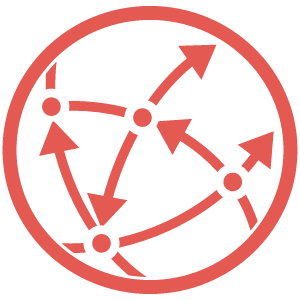

personal data
个人简介
这个人很懒没有留下简介~

Personal interests
摄影:
喜欢捕捉生活中的美好瞬间，记录点滴回忆。
阅读：
沉浸在书籍的世界里，拓宽视野和思维。
远足：
享受大自然的宁静，放松身心。
音乐：
听旋律和歌词带来的共鸣，让心灵愉悦。
编程：
解决问题的过程充满挑战和乐趣。
手工：
喜欢创造出独特而有温度的小物品。
下棋：
锻炼思维逻辑，感受策略的魅力。
游泳：
在水中感受自由与活力，同时强健体魄。
旅行：
探索不同的风土人情，收获独特的记忆和见闻。
Personal prospects
技术与数字化技能
精通编程、数据分析、人工智能和云计算等技术。 熟悉多种开发工具和数字平台，适应不断变化的技术环境。
跨学科能力
能在多个领域之间搭建桥梁，例如生物学与人工智能、工程与设计的结合。 具备从不同学科中汲取灵感并整合应用的能力。
创新与创造力
提出解决复杂问题的新颖方法。 开发新产品或优化现有流程，具有敏锐的市场洞察力。
全球化视野与多语言能力
理解多元文化，能在国际团队中工作。 熟练掌握至少两到三种语言以适应全球化需求。
可持续发展意识
关注环保和社会责任，倡导绿色科技和循环经济。 具备设计和执行可持续项目的能力。
终身学习能力
拥抱快速学习新技能的心态，掌握自我提升方法。 善于利用在线学习资源和行业动态更新知识。
高效沟通与协作能力
能清晰传达想法，促进团队协作。 掌握线上和线下沟通技巧，适应混合工作模式。
数据驱动决策能力
精通数据采集、处理和解读。 能够利用数据分析支持业务决策和战略规划。
心理韧性与适应力
面对不确定性和快速变化时保持冷静。 善于处理压力、调整心态，具备解决冲突的能力。